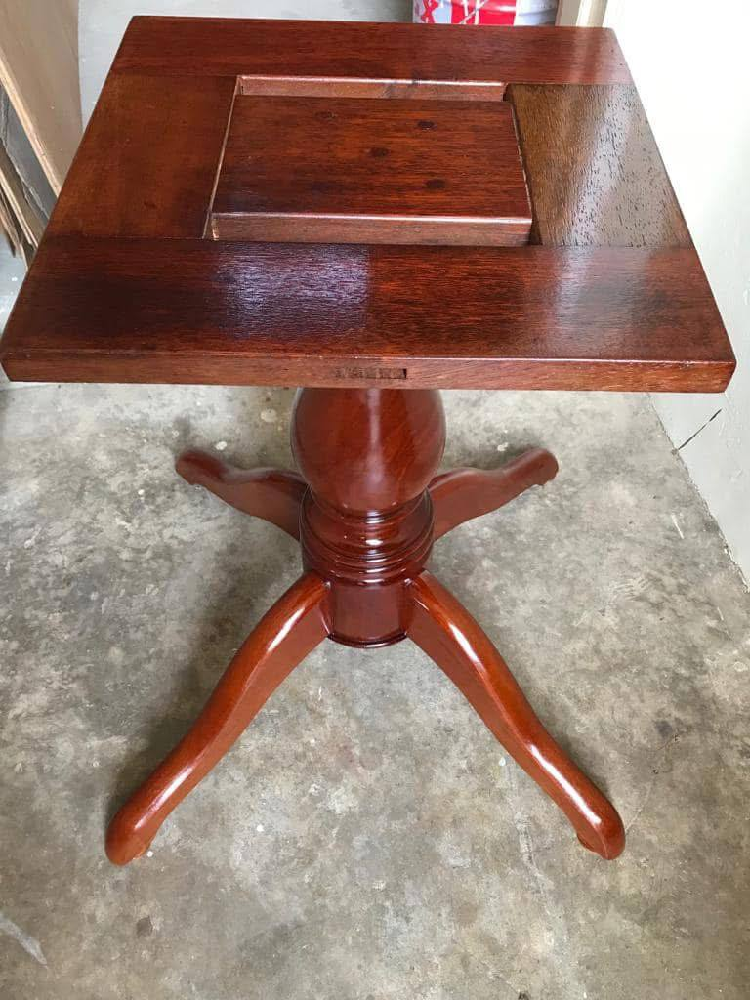
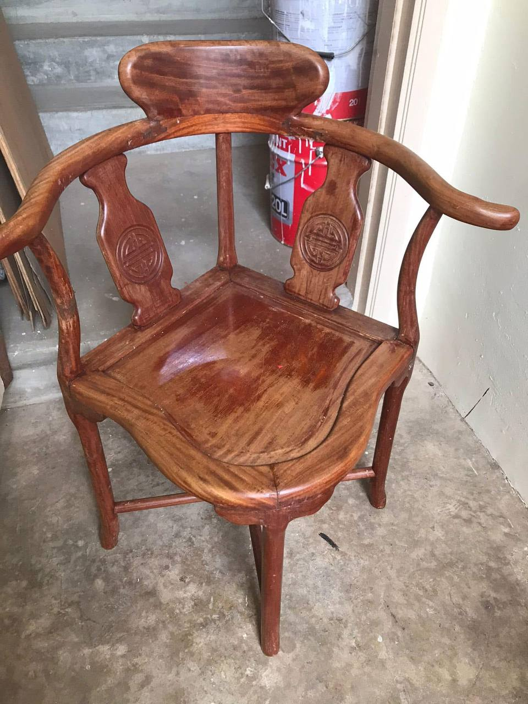
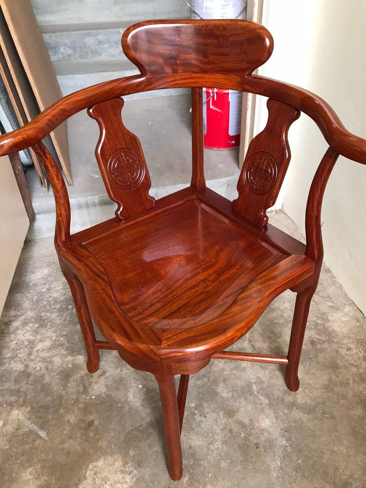
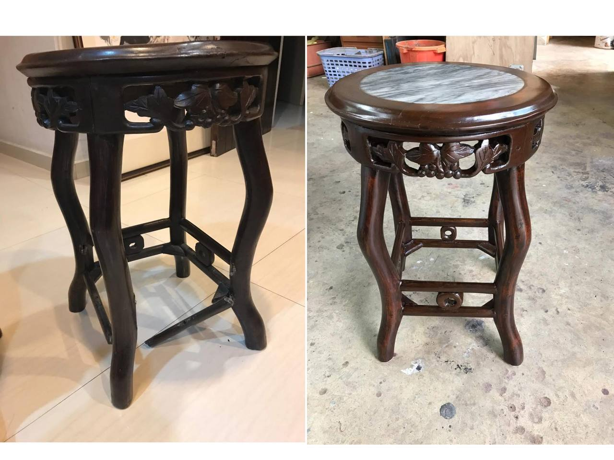
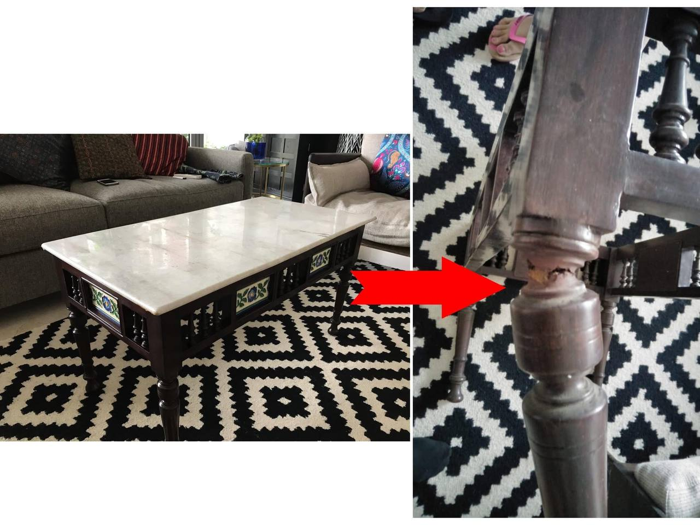

OUR WORK
Restoration Gallery
A selection of pieces we've brought back to life over the years.

Antique Chair
Before & after restoration

Wooden Entrance Door
Stripped, re-stained and re-lacquered

Table
Refinished and re-lacquered

Corner Chair (Before)
Before restoration

Corner Chair (After)
Re-lacquered and refinished

Front Desk Table
Before & after restoration

Marble-Top Table
Before & after restoration

Marble-Top Coffee Table
Structural leg repair

Lacquer Bench
Frame repair, re-lacquer & reupholstery